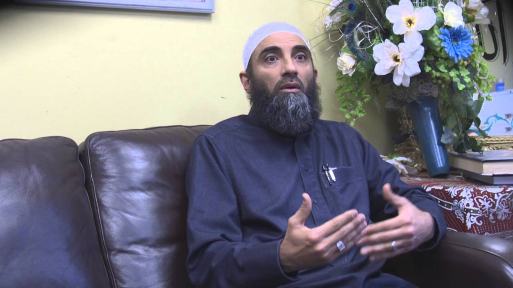

For any administrative questions or comments please contact the Imam's Assistant at Kashif.Osman@islam1.org
Classes
The Imams are thrilled to offer a variety of exciting programs
For the 2019-2020 academic year, the IAR offers the following programs - click on each one to learn more!
Weight of a Nation: Implementing the Prophet's Example
Quran Development Class by Sheikh Badawy
Marriage Services
The Islamic Association of Raleigh Congratulates you!
Please note the following guidelines to help make your ceremony run smoothly:
Obtain a marriage license before the IAR marriage ceremony from a North Carolina Register of Deeds office. Additional information available at (919) 856-5460
The following individuals should be physically present at the marriage ceremony:
Groom
Bride
Father of the bride or an equivalent Mahram (relative guardian) to her, serving as Wali
2 Muslim witnesses (IAR can provide if needed, with advance notice)
The following documentation will be required on the day of the marriage at IAR:
Marriage license (the register of deed)
No Marriage is performed without valid Marriage License.
Photo Identification for bride, groom, and witnesses
An agreement specifying the amount of the Mahr (dowry) agreed upon and how/when it will be paid.
We are saddened to hear of the situation and pray for a speedy resolution.
As for IAR services, we do not offer separate processing of Islamic divorce and unlike marriage, there is no paperwork to complete in the mosque. The husband is initiates talaq (divorce initiated from husband), or the wife pursues khulu (divorce initiated by wife) via the civil divorce process, and observe the Islamic ethical guidelines within that process.
For support with resources in continuing to work on the marriage, please feel free to meet with IAR Counseling Referral Services.
Mohamed AbuTaleb serves as the Imam of the Islamic Association of Raleigh. He is a lifelong student of the Quran and Islamic studies, has studied with a number of credentialed scholars and teachers and has been blessed to memorize the Holy Quran.
Mohamed has pursued seminary training through the Cambridge Islamic College and Al-Salam Institute in the United Kingdom, and studied under teachers trained at Islamic universities in India, Saudi Arabia, Syria, Jordan, and Egypt.
Imam AbuTaleb has traveled the United States extensively as a lecturer, trainer, and educator. He serves as an instructor for the OakTree Institute and has collaborated with a myriad of organizations and institutions.
He shares his love of learning with audiences at an array of universities, community centers, and places of worship. His style enables audiences to couple transformative understanding with relevance to daily life, and to cut across labels and divisions through scholarship and dialogue.
Previous lectures from Harvard, MIT, Columbia University, Georgia Tech, and many others can be found on his YouTube, Facebook, and Twitter pages.
Imam AbuTaleb has sought to mirror the marriage of sacred and worldly sciences found in earlier generations of Muslim scholars. Complementing his service record in youth work, education, and ministry, Mohamed has worked in technical engineering positions spanning academia, government, and industry.
Imam AbuTaleb's greatest charge in life is to worship Allah by being a good father, husband, and son. He is happily married and blessed with a young son and a young daughter.
Imam Muamar Dahnoun
Imam/Congregant Care

Imam Muamar Dahnoun is a native of Palestine and has lived in Raleigh, North Carolina since 1993. And since 1998, Imam Muamar has been the Islamic Association of Raleigh's main fundraising coordinator and youth counselor.
Imam Muamar received his vocational undergraduate degrees in computer science and business when he first arrived to the states but his heart was always with pursuing his Islamic studies and dedicating his life to serve the Muslim community.
In 1995 when the American Open University was first established, Imam Muamar decided to pursue his undergraduate Islamic & Arabic studies from the American Open University in Alexandria, Virginia under the supervision of Sheikh Dr. Salah Al Sawy and is currently pursuing his Master's degree in Islamic Finance from Guidance College in Houston, Texas under the supervision of Sheikh Dr. Main Al Qudah.
Imam Muamar is married and a father of 4 children.
Sheikh Mesbah Badawy
Religious Specialist
He was encouraged by his father at a very early age to learn Qur’an at a Kuttab (Quranic school)
Shaykh Mesbah memorized the Qur’an at an early age 11 years old
He graduated from Al-Azhar University, one of the oldest and most prestigious institutions
of Islamic knowledge in the world.
He was a student at Al-Azhar from Elementary school until completion of his B.A Degree in 2006 .
Shaykh Mesbah has 15 years of experience in teaching Quran and delivering spiritually uplifting sermons,
Shaykh Mesbah takes a particular interest in outreach programs, organizing educational seminars and working with the youth.
In his spare time, he enjoys spending time with his family, playing Basketball, football and fishing.
Shaykh Mesbah is married and has two children
Professionally, He worked since graduation in different fields
He taught at the institute of Quran teachers in Cairo for three years from 2005 till 2008.
He was also a researcher at the Center for Arabic
He led Ramadan prayers for five consecutive years at several mosques in Egypt.
B.A degree in Education & information science, Azhar University 2006.
Pre-Masters course in education, Azhar University, Cairo, Egypt 2008.
Azhar Secondary School teacher in 2007.
Quran teacher at An-Noor school Islamic association of Raleigh since 2012 until 2016 Advance level
Quran Teacher at al Misbah Quran Academy at jamaat Ibad R Rahman in Durham
Certified and has Experience in human result and counseling.
Counseling
Mental Heath Referral Team.
The much neglected focus of our community has been personal, family, behavioral, and mental wellness. A taboo topic by its nature; however, a difficult reality for many in our own community.
Alhamdulillah, with all praises and thanks due to Allah, we are proud to announce our latest initiative, IAR Pastoral Care and Counseling Referral Services.
A group of qualified volunteers, Muslim health professionals, coming together to assist our community at large. We welcome volunteers & suggestions! Please email health@islam1.org.
"There is no disease that Allah has created, except that He has also created its treatment."
Narrated by Abu Huraira
Our Objectives
To effectively and confidentially reach out to those who are in need of such services.
To provide referral to mental health support services
To create awareness and educate the Triangle community about various mental health/social issues.
Visits for hospitalized children + adults. (Visits in Triangle Area Only)
Request free educational emotional & behavioral wellness workshops for group of 10 & above.
To request any of our special services, please email: health@islam1.org.
We ask Allah to accept our efforts and make this beneficial for of our community. Ameen.
If you have any questions, please email health@islam1.org or call 919-834-9572 ext #1337.


 He was encouraged by his father at a very early age to learn Qur’an at a Kuttab (Quranic school)
Shaykh Mesbah memorized the Qur’an at an early age 11 years old
He graduated from Al-Azhar University, one of the oldest and most prestigious institutions
of Islamic knowledge in the world.
He was a student at Al-Azhar from Elementary school until completion of his B.A Degree in 2006 .
Shaykh Mesbah has 15 years of experience in teaching Quran and delivering spiritually uplifting sermons,
Shaykh Mesbah takes a particular interest in outreach programs, organizing educational seminars and working with the youth.
In his spare time, he enjoys spending time with his family, playing Basketball, football and fishing.
Shaykh Mesbah is married and has two children
Professionally, He worked since graduation in different fields
He taught at the institute of Quran teachers in Cairo for three years from 2005 till 2008.
He was also a researcher at the Center for Arabic
He led Ramadan prayers for five consecutive years at several mosques in Egypt.
B.A degree in Education & information science, Azhar University 2006.
Pre-Masters course in education, Azhar University, Cairo, Egypt 2008.
Azhar Secondary School teacher in 2007.
Quran teacher at An-Noor school Islamic association of Raleigh since 2012 until 2016 Advance level
Quran Teacher at al Misbah Quran Academy at jamaat Ibad R Rahman in Durham
Certified and has Experience in human result and counseling.
He was encouraged by his father at a very early age to learn Qur’an at a Kuttab (Quranic school)
Shaykh Mesbah memorized the Qur’an at an early age 11 years old
He graduated from Al-Azhar University, one of the oldest and most prestigious institutions
of Islamic knowledge in the world.
He was a student at Al-Azhar from Elementary school until completion of his B.A Degree in 2006 .
Shaykh Mesbah has 15 years of experience in teaching Quran and delivering spiritually uplifting sermons,
Shaykh Mesbah takes a particular interest in outreach programs, organizing educational seminars and working with the youth.
In his spare time, he enjoys spending time with his family, playing Basketball, football and fishing.
Shaykh Mesbah is married and has two children
Professionally, He worked since graduation in different fields
He taught at the institute of Quran teachers in Cairo for three years from 2005 till 2008.
He was also a researcher at the Center for Arabic
He led Ramadan prayers for five consecutive years at several mosques in Egypt.
B.A degree in Education & information science, Azhar University 2006.
Pre-Masters course in education, Azhar University, Cairo, Egypt 2008.
Azhar Secondary School teacher in 2007.
Quran teacher at An-Noor school Islamic association of Raleigh since 2012 until 2016 Advance level
Quran Teacher at al Misbah Quran Academy at jamaat Ibad R Rahman in Durham
Certified and has Experience in human result and counseling.